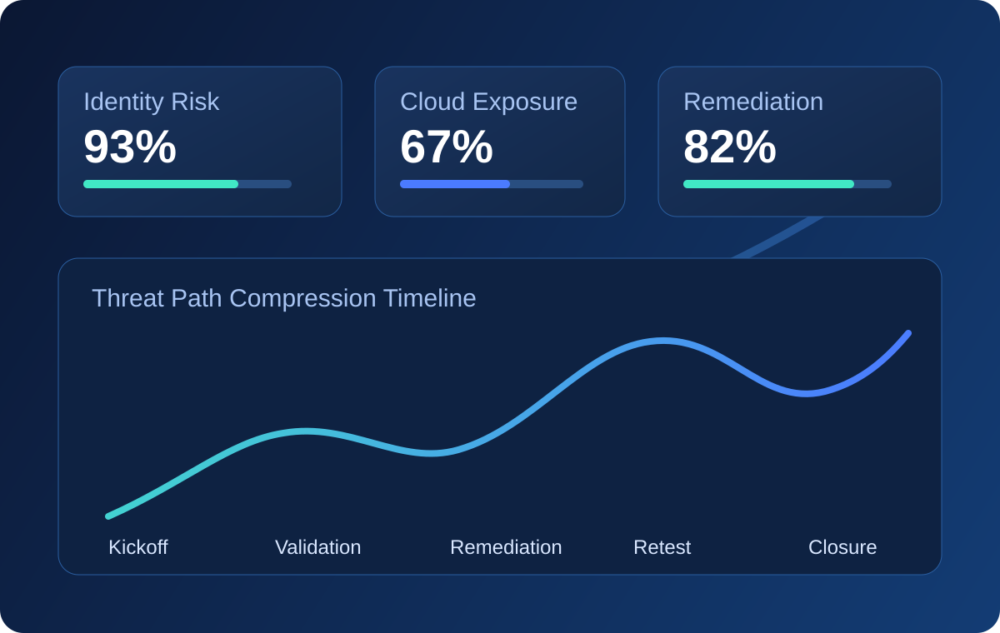

Response SLA
Leadership reply within 24 hoursDelivery Regions
USA, Spain, India, Ecuador, and global remoteEngagement Control
NDA-first, written authorization requiredControl Alignment
Mapped to SOC 2, ISO 27001, PCI DSS, HIPAAGlobal Cybersecurity Partner
Enterprise offensive security that protects business growth.
CodeVertex delivers multi-layer penetration testing, cloud exposure analysis, red team simulation, and remediation verification programs for high-growth and regulated organizations.
Security methodology aligned with global standards
OWASPNISTMITRE ATT&CKISO 27001CIS
Enterprise Signal Studio
Three standardized visual models for executive and engineering decisions.
Risk Radar
Top attack-surface pressure zones in a single leadership view.
Maturity Ladder
- Baseline controls
- Threat-informed hardening
- Continuous assurance
- Board-visible resilience
Control evolution mapped to measurable program maturity.
Closure Funnel
Execution signal from discovery to verified closure.
Animated Security Studio
Interactive security stories that move buyers to action.
We replaced static photography with animated scenes to explain detection, response, and remediation workflows.
SOC analyst simulation with live alert movement and triage focus indicators.
Animated attack-path route visualization across identity, cloud, and application tiers.
DetectReal-time telemetry
RespondPriority escalation
VerifyRetest closure
Defense-in-depth control model with animated resilience pulse states.
Process Explainer
See the full engagement journey in under 30 seconds.
Scope
Risk and critical asset alignment
Execute
Manual offensive validation
Prioritize
Decision-ready reporting
Retest
Closure verification
Risk Intelligence Infographics
Turn complex risk into executive and engineering decisions.
Attack-Path Density
Identity
Cloud
App
Density scores combine exploitability, privilege depth, and asset criticality.
Remediation Velocity Funnel
Findings triaged
Owner assigned
Fix in progress
Retest passed
Client teams use this structure to convert risk into closure metrics.
Governance Alignment Map
- SOC 2Control evidence packets
- ISO 27001Risk-treatment mapping
- PCI DSSPayment-path attack coverage
- HIPAA / GDPRSensitive data exposure checks
Service Portfolio
Full-spectrum cybersecurity services for modern attack surfaces.
Structured engagements, measurable outcomes, and board-ready reporting.
01
Web & API Penetration Testing
Business logic abuse validation, auth controls, and API trust boundary testing.
- OWASP Top 10 + API logic testing
- Authentication and authorization control review
- Evidence-backed remediation guidance
02
Cloud & Infrastructure Security
Privilege escalation analysis, segmentation testing, and lateral movement mapping.
- AWS, Azure, GCP coverage
- IAM privilege chain analysis
- Hybrid environment attack path testing
03
Red Team Operations
Objective-driven adversary simulations aligned with risk and detection goals.
- Custom threat scenarios
- Detection and response gap analysis
- Leadership and SOC debrief
Delivery Model
From scoping to remediation closure with executive-grade discipline.
Scoping & Risk Alignment
Business priorities, critical assets, and tested boundaries defined upfront.
Manual Offensive Assessment
Exploitability-first testing with critical issue escalation.
Reporting & Prioritization
Executive narrative, technical findings, and owner-mapped actions.
Retest & Validation
Verification of critical and high-risk remediation closures.
Client Outcomes
Measurable results delivered without exposing client-sensitive data.
Global SaaS Platform
Authentication chain exploitation removed and remediated within 14 days.
Web + APIPrivilege Escalation
View case studyFinancial Services Group
Cloud IAM role chaining closed in 21 days across critical workloads.
Cloud + IAMLateral Movement
View case studyDecision-focused summaries for leadership and governance.
Actionable evidence with implementation guidance.
Outputs aligned to enterprise compliance workflows.
Executive Confidence Layer
Why enterprise teams renew with CodeVertex after the first engagement.
Transparent operating model
No black-box findings. Stakeholders see context, exploit path, and business impact at every stage.
Built for board-level scrutiny
We structure reporting to support governance, legal review, and security committee decisions.
Engineering-ready from day one
Fix guidance is written for implementation reality, not audit checkbox language.
Client Proof
Enterprise teams that trust our delivery model.
Trust Center
Everything procurement, legal, and security teams need in one place.
Evidence-backed delivery, governance alignment, and clear accountability from kickoff to closure.
Assurance Outputs
- Executive risk narrative and board summary
- Technical exploit evidence with fix guidance
- Owner-mapped remediation register
- Retest confirmation memo
Compliance Mapping
- SOC 2 trust-service control support
- ISO 27001 risk-treatment alignment
- PCI DSS payment attack-path validation
- HIPAA / GDPR sensitive data safeguards
Program Governance
- Named engagement manager and escalation matrix
- Weekly steering updates for leadership
- Daily engineering issue resolution cadence
- Closure milestones with measurable KPIs
Micro Explainers
Fast visual explainers for board, legal, and engineering alignment.
Board Brief Flow
How findings become decision-ready actions for executives.
Engineering Closure Flow
How technical teams move from evidence to validated fix.
Assurance Flow
How governance teams track closure and maintain confidence.
Visual Intelligence
Risk signals visualized for faster executive sign-off and technical action.
Use these visuals to align board updates, architecture reviews, and remediation priorities.

FAQ
Common pre-engagement questions
Typical kickoff occurs within 5-10 business days after approved scope.
Yes, we validate closure of critical and high findings within the agreed window.
Yes, our reporting maps to SOC 2, ISO 27001, PCI DSS, HIPAA, and more.
Contact
Start with a confidential cybersecurity scoping session.
Share your environment and priorities. We respond with clear next steps.
Book executive call
- Coverage
- USA | Spain | India | Ecuador | Global Remote
- Response
- Typically within 24 hours